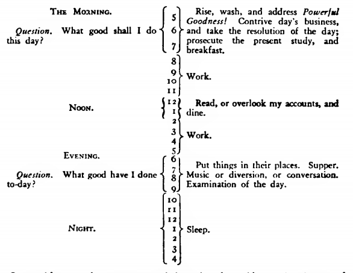

1. TEMPERANCE.
Eat not to dullness; drink not to elevation.
2. SILENCE.
Speak not but what may benefit others or yourself; avoid trifling conversation.
3. ORDER.
Let all your things have their places; let each part of your business have its time.
4. RESOLUTION.
Resolve to perform what you ought; perform without fail what you resolve.
5. FRUGALITY.
Make no expense but to do good to others or yourself; i.e., waste nothing.
6. INDUSTRY.
Lose no time; be always employ'd in something useful; cut off all unnecessary actions.
7. SINCERITY.
Use no hurtful deceit; think innocently and justly, and, if you speak, speak accordingly.
8. JUSTICE.
Wrong none by doing injuries, or omitting the benefits that are your duty.
9. MODERATION.
Avoid extreams; forbear resenting injuries so much as you think they deserve.
10. CLEANLINESS.
Tolerate no uncleanliness in body, cloaths, or habitation.
11. TRANQUILITY.
Be not disturbed at trifles, or at accidents common or unavoidable.
12. CHASTITY.
Rarely use venery but for health or offspring, never to dulness, weakness, or the injury of your own or another's peace or reputation.
13. HUMILITY.
Imitate Jesus and Socrates.
My intention being to acquire the habitude of all these virtues, I judg'd it would be well not to distract my attention by attempting the whole at once, but to fix it on one of them at a time; and, when I should be master of that, then to proceed to another, and so on, till I should have gone thro' the thirteen; and, as the previous acquisi- tion of some might facilitate the acquisition of certain others, I ar- rang'd them with that view, as they stand above. Temperance first, as it tends to procure that coolness and clearness of head, which is so necessary where constant vigilance was to be kept up, and guard maintained against the unremitting attraction of ancient habits, and the force of perpetual temptations. This being acquir'd and establish'd. Silence would be more easy; and my desire being to gain knowledge at the same time that I improv'd in virtue, and considering that in conversation it was obtain'd rather by the use of the ears than of the tongue, and therefore wishing to break a habit I was getting into of prattling, punning, and joking, which only made me acceptable to trifling company, I gave Silence the second place. This and the next. Order, I expected would allow me more time for attending to my project and my studies. Resolution, once become habitual, would keep me firm in my endeavors to obtain all the subsequent virtues; Frugality and Industry freeing me from my remaining debt, and producing affluence and independence, would make more easy the practice of Sincerity and Justice, etc., etc. Conceiving then, that, agreeably to the advice of Pythagoras in his Golden Verses, daily examination would be necessary, I contrived the following method for conducting that examination.
I made a little book, in which I allotted a page for each of the virtues. I rul'd each page with red ink, so as to have seven columns, one for each day of the week, marking each column with a letter for the day. I cross'd these columns with thirteen red lines, marking the beginning of each line with the first letter of one of the virtues, on which line, and in its proper column, I might mark, by a little black spot, every fault I found upon examination to have been committed respecting that virtue upon that day.

I determined to give a week's strict attention to each of the virtues successively. Thus, in the first week, my great guard was to avoid every the least offence against Temperance, leaving the other virtues to their ordinary chance, only marking every evening the faults of the day. Thus, if in the first week I could keep my first line, marked T, clear of spots, I suppos'd the habit of that virtue so much strengthen'd, and its opposite weaken'd, that I might venture ex-tending my attention to include the next, and for the following week keep both lines clear of spots. Proceeding thus to the last, I could go thro' a course compleat in thirteen weeks, and four courses in a year. And like him who, having a garden to weed, does not attempt to eradicate all the bad herbs at once, which would exceed his reach and his strength, but works on one of the beds at a time, and, having accomplish'd the first, proceeds to a second, so I should have, 1 hoped, the encouraging pleasure of seeing on my pages the progress I made in virtue, by clearing successively my lines of their spots, till in the end, by a number of courses, I should be happy in viewing a clean book, after a thirteen weeks' daily examination.
This my little book had for its motto these lines from Addison's Cato:
"Here will I hold. If there's a power above us (And that there is, all nature cries aloud Thro' all her works), He must delight in virtue; And that which he delights in must be happy."
Another from Cicero,
"O vitae Philosophia dux! O virtutum indagatrix expultrixque viti-orum! Unus dies, bene et ex przccptis tuis actus, pcccanti immortalitatiest anteponendus."
Another from the Proverbs of Solomon, speaking of wisdom or virtue:
"Length of days is in her right hand, and in her left hand riches and honour. Her ways are ways of pleasantness, and all her paths are peace." iii. 16, 17.
And conceiving God to be the fountain of wisdom, I thought it right and necessary to solicit his assistance for obtaining it; to this end I formed the following little prayer, which was prefix'd to my tables of examination, for daily use.
"O powerful Goodness! bountiful Father! merciful Guide! Increase in me that wisdom which discovers my truest interest. Strengthen my resolutions to perform what that wisdom dictates. Accept my kind offices to thy other children as the only return in my power for thy continual favors to me."
I used also sometimes a little prayer which I took from Thomson's Poems, viz.:
"Father of light and life, thou Good Supreme! O teach me what is good; teach me Thyself! Save me from folly, vanity, and vice. From every low pursuit; and fill my soul With knowledge, conscious peace, and virtue pure; Sacred, substantial, never-fading bliss!"
The precept of Order requiring that every part of my business should have its allotted time, one page in my little book contain'd the following scheme of employment for the twenty-four hours of a natural day:
I enter'd upon the execution of this plan for self-examination, and continu'd it with occasional intermissions for some time. I was surpris'd to find myself so much fuller of faults than I had imagined; but I had the satisfaction of seeing them diminish. To avoid the trouble of renewing now and then my little book, which, by scraping out the marks on the paper of old faults to make room for new ones in a new course, became full of holes, I transferr'd my tables and precepts to the ivory leaves of a memorandum book, on which the lines were drawn with red ink, that made a durable stain, and on those lines I mark'd my faults with a black-lead pencil, which marks I could easily wipe out with a wet sponge. After a while I went thro' one course only in a year, and afterward only one in several years, till at length I omitted them entirely, being employ'd in voy-ages and business abroad, with a multiplicity of affairs that inter-fered; but I always carried my little book with me.
My scheme of Order gave me the most trouble; and I found that, tho' it might be practicable where a man's business was such as to leave him the disposition of his time, that of a journeyman printer, for instance, it was not possible to be exactly observed by a master, who must mix with the world, and often receive people of business at their own hours. Order, too, with regard to places for things, papers, etc., I found extreamly difficult to acquire. I had not been early accustomed to it, and, having an exceeding good memory, I was not so sensible of the inconvenience attending want of method. This article, therefore, cost me so much painful attention, and my faults in it vexed me so much, and I made so little progress in amendment, and had such frequent relapses, that I was almost ready to give up the attempt, and content myself with a faulty character in that respect, like the man who, in buying an ax of a smith, my neighbour, desired to have the whole of its surface as bright as the edge. The smith consented to grind it bright for him if he would turn the wheel; he turn'd, while the smith press'd the broad face of the ax hard and heavily on the stone, which made the turning of it very fatiguing. The man came every now and then from the wheel to see how the work went on, and at length would take his ax as it was, without farther grinding. "No," said the smith, "turn on, turn on; we shall have it bright by-and-by; as yet, it is only speckled." "Yes," said the man, "but I think I like a speckled ax best." And I believe this may have been the case with many, who, having, for want of some such means as I employ'd, found the difficulty of obtaining good and breaking bad habits in other points of vice and virtue, have given up the struggle, and concluded that "a speckled ax was best"; for something, that pretended to be reason, was every now and then suggesting to me that such extream nicety as I exacted of myself might be a kind of foppery in morals, which, if it were known, would make me ridiculous; that a perfect character might be attended with the inconvenience of being envied and hated; and that a benevolent man should allow a few faults in himself, to keep his friends in countenance.
In truth, I found myself incorrigible with respect to Order; and now I am grown old, and my memory bad, I feel very sensibly the want of it. But, on the whole, tho' I never arrived at the perfection I had been so ambitious of obtaining, but fell far short of it, yet I was, by the endeavour, a better and a happier man than I otherwise should have been if I had not attempted it; as those who aim at perfect writing by imitating the engraved copies, tho' they never reach the wish'd-for excellence of those copies, their hand is mended by the endeavor, and is tolerable while it continues fair and legible.
It may be well my posterity should be informed that to this little artifice, with the blessing of God, their ancestor ow'd the constant felicity of his life, down to his 79th year, in which this is written. What reverses may attend the remainder is in the hand of Providence; but, if they arrive, the reflection on past happiness enjoy'd ought to help his bearing them with more resignation. To Temperance he ascribes his long continued health, and what is still left to him of a good constitution; to Industry and Frugality, the early easiness of his circumstances and acquisition of his fortune, with all that knowledge that enabled him to be a useful citizen, and obtained for him some degree of reputation among the learned; to Sincerity and Justice, the confidence of his country, and the honorable employs it conferred upon him; and to the joint influence of the whole mass of the virtues, even in the imperfect state he was able to acquire them, all that evenness of temper, and that cheerfulness in conversation, which makes his company still sought for, and agreeable even to his younger acquaintance. I hope, therefore, that some of my descendants may follow the example and reap the benefit.
< Go Back